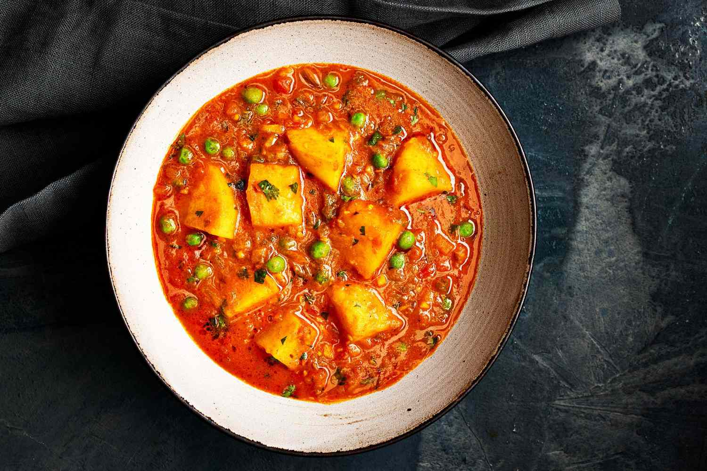

Aloo matar is a traditional North Indian dish consisting of sautéed potatoes (aloo) and green peas (matar) combined with tomato sauce and numerous spices such as garlic, ginger, coriander, onion, and cumin. It is usually served piping hot as a side dish, accompanying roti, puri, or naan. Flavorful and slightly spicy, this popular winter dish has numerous variations, with almost every family in Punjab having their own recipe.
Meal prep time : 15 minutes
Servings : 3